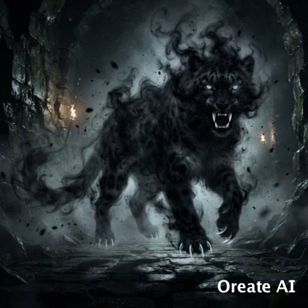
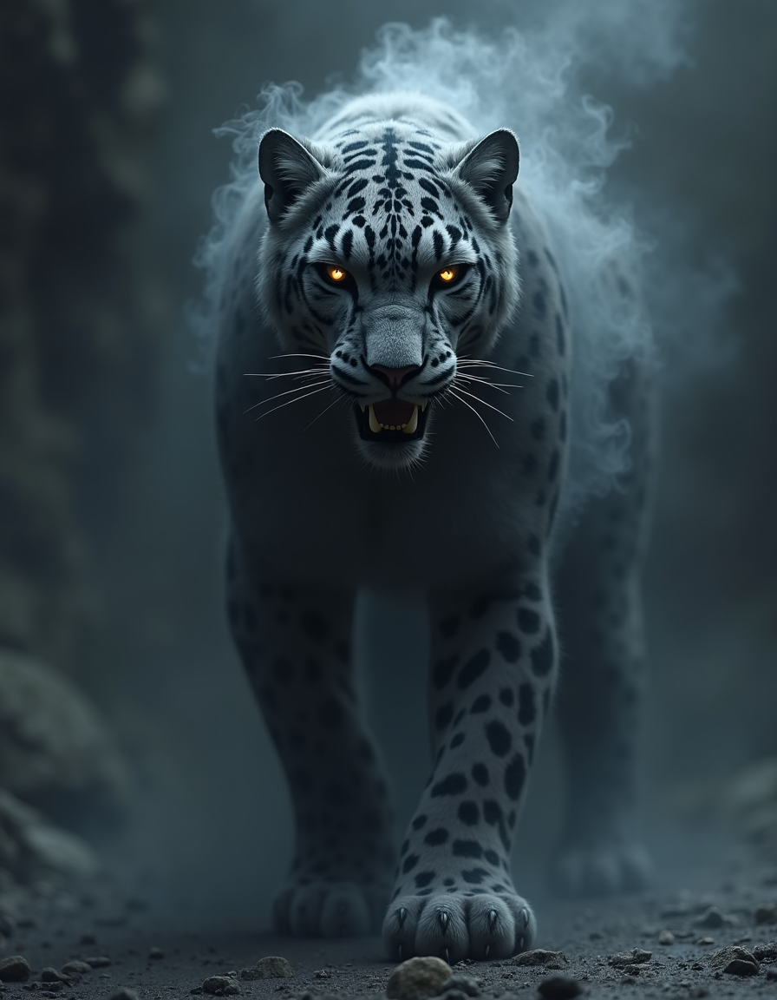
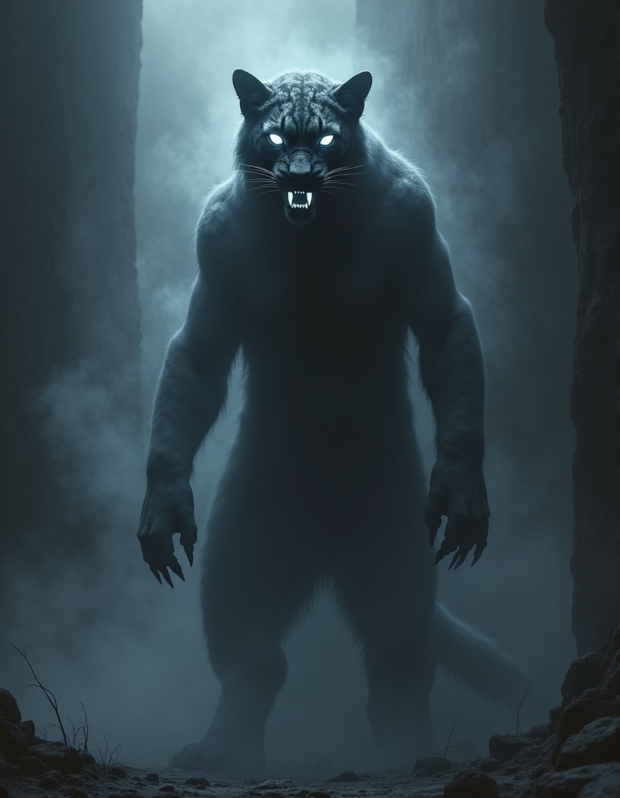
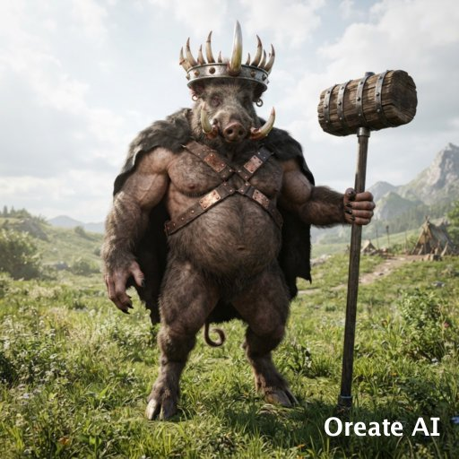
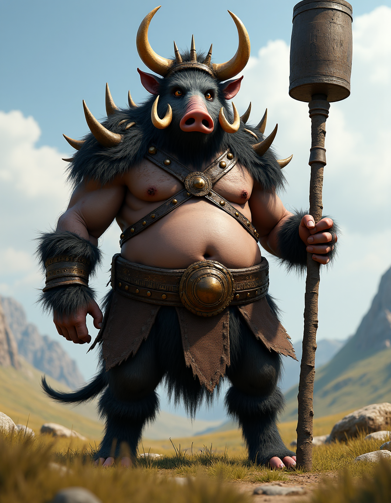
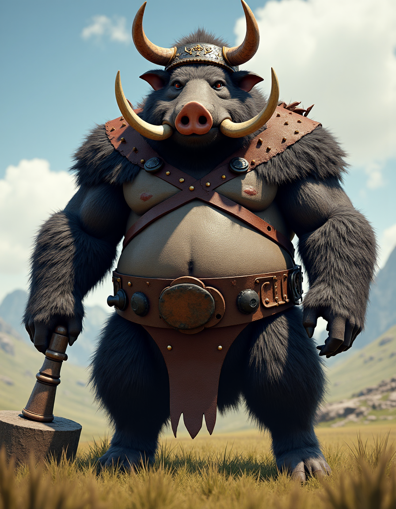
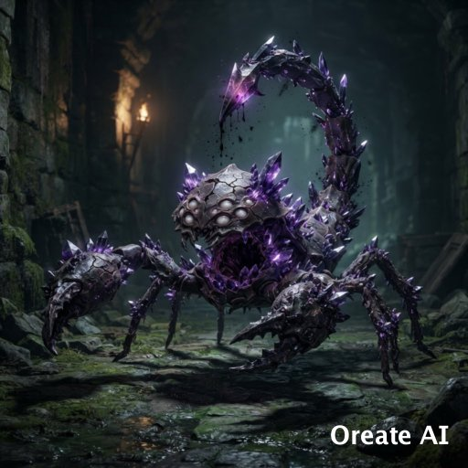
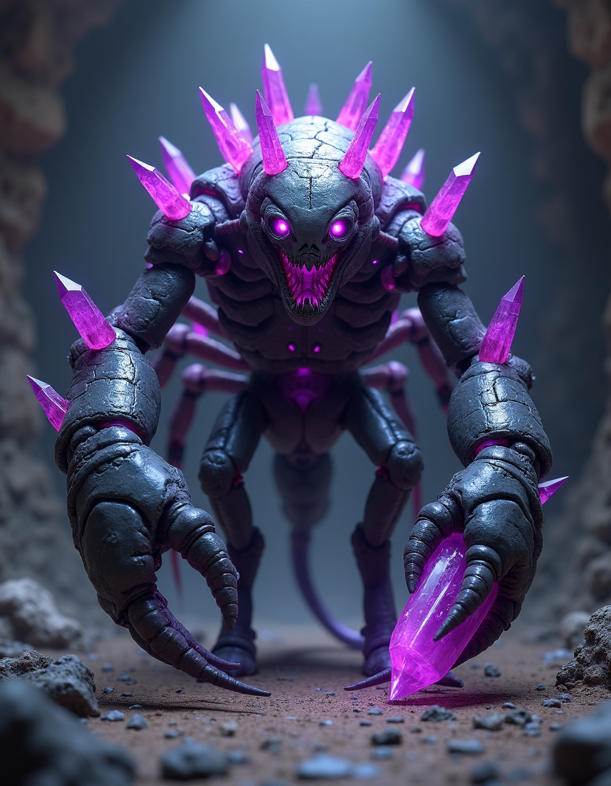
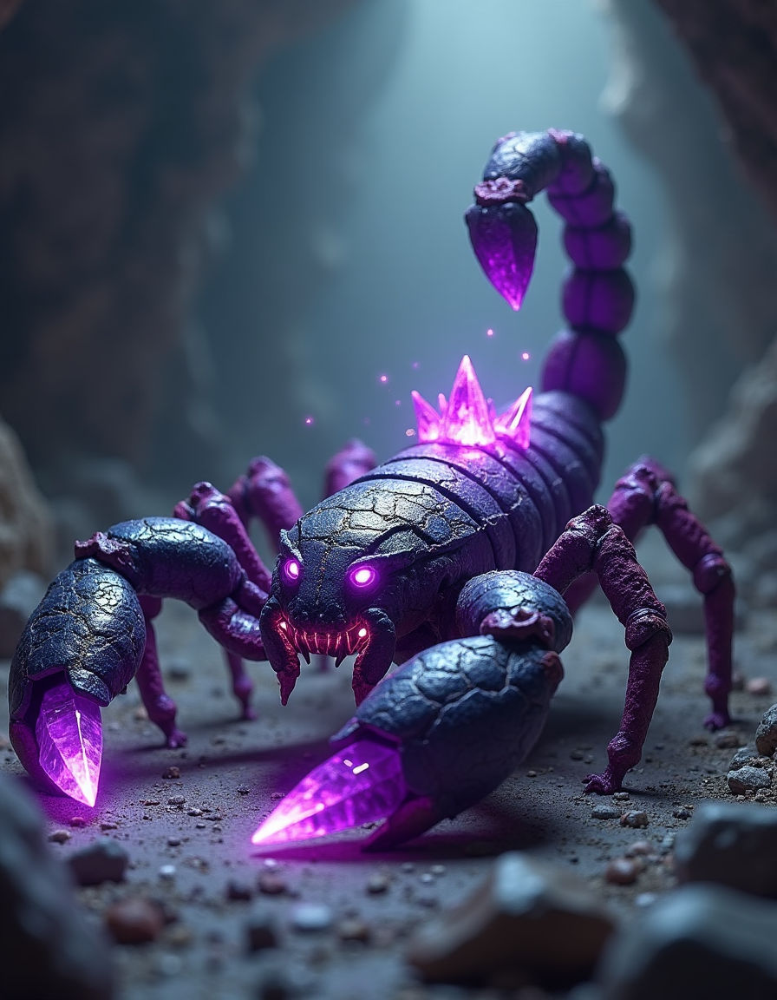

Тест генерації
Робоча сторінка для порівняння референсів і згенерованих варіантів перед тим, як картинка йде у вікі. Нічого звідси не лінкується з основних сторінок.
Монстри — референс проти власного FLUX-конвеєра
Три монстри з бестіарію (рівні 38–40, підземелля 1): оригінал — знайдений референс (Oreate AI), v1/v2 — наша генерація тим самим промтом локальним FLUX (flux1-dev-Q4_K_S, ComfyUI, 28 кроків, guidance 3.5, без ітерацій, лише зміна seed).
тіньовий некро-ірбіс
рівень 40 · C · підземелля 1 · примарна нежива кішка, що матеріалізується з темряви



кабанолюд-вождь
рівень 39 · C · Початкова рівнина · дворучний молот, корона з іклів



проклятий кристалічний скорпіон-нежить
рівень 38 · C · підземелля 1 · панцир проріс проклятою темною рудою


